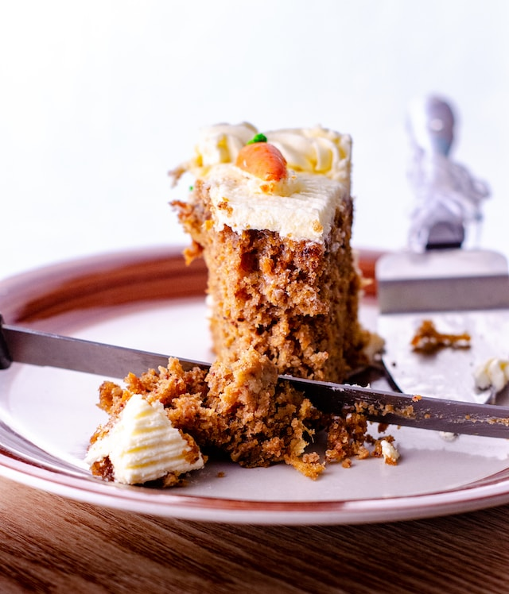

Carrot Cakes

Description
The origins of carrot cake are disputed. Published in 1591, there is an English recipe for "pudding in a Carret [sic] root" that is essentially a stuffed carrot with meat, but it includes many elements common to the modern dessert: shortening, cream, eggs, raisins, sweetener (dates and sugar), spices (clove and mace), scraped carrot, and breadcrumbs (in place of flour). Many food historians believe carrot cake originated from such carrot puddings eaten by Europeans in the Middle Ages, when sugar and sweeteners were expensive and many people used carrots as a substitute for sugar.
Variations of the carrot pudding evolved to include baking with a crust (as pumpkin pie), steamed with a sauce, or molded in pans (as plum pudding) with icing.
Recipe Ingredent
- Sugar
- Egg
- Walnut
- Cinnamon
- Carrot
- Flour
Steps
- preheat the oven to 350 degrees F. (176C). Next let's add our eggs to a large bowl, along with our sugar, oil, and vanilla extract
- we will add our carrots and pineapple then mix them in until combined. A note about the carrots, I like to just buy the baby carrots that come already peeled, and then put them in a food processor.
- lets add our baking soda, baking powder, salt, and cinnamon to our flour and mix them well with a whisk
- add the dry mixture to our wet mixture
- using a 13x9 inch pan, we grease it with shortening, you can flour it as well if you like, or use a piece of parchment paper on the bottom
- while our cake is cooling let's make our cream cheese frosting.
- you can leave the cake in the pan which is what I normally do, or take it out and put it on a cake board